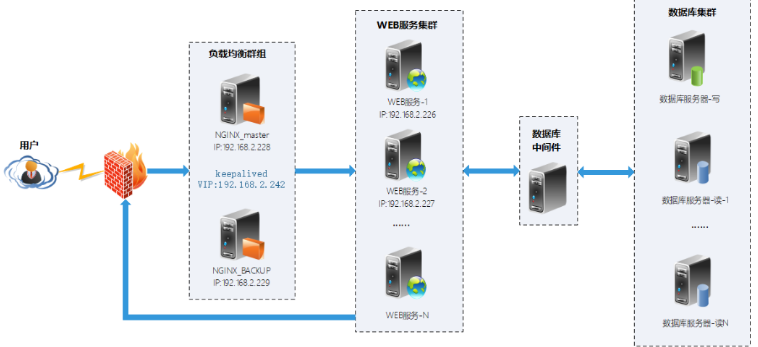

高可用负载-部署docker+nginx+keepalived实现高可用web集群
一、体系架构
在Keepalived + Nginx高可用负载均衡架构中，keepalived负责实现High-availability (HA) 功能控制前端机VIP（虚拟网络地址），当有设备发生故障时，热备服务器可以瞬间将VIP自动切换过来，实际运行中体验只有2秒钟切换时间，DNS服务可以负责前端VIP的负载均衡。
nginx负责控制后端web服务器的负载均衡，将客户端的请求按照一定的算法转发给后端Real Server处理，而Real Server将响应直接返回给客户端。

二、简单原理
NGINX_MASTER、NGINX_BACKUP两台服务器均通过keepalived软件把ens32网卡绑上一个虚拟IP（VIP）地址192.168.2.242
此VIP当前由谁承载着服务就绑定在谁的ens32上，
当NGINX_MASTER发生故障时，NGINX_BACKUP会通过/etc/keepalived/keepalived.conf文件中设置的心跳时间advert_int 1检查，
无法获取NGINX_MASTER正常状态的话，NGINX_BACKUP会瞬间绑定VIP来接替nginx_master的工作，
当NGINX_MASTER恢复后keepalived会通过priority参数判断优先权将虚拟VIP地址192.168.2.242重新绑定给NGINX_MASTER的ens32网卡。
使用此方案的优越性
1、实现了可弹性化的架构，在压力增大的时候可以临时添加web服务器添加到这个架构里面去;
2、upstream具有负载均衡能力，可以自动判断后端的机器，并且自动踢出不能正常提供服务的机器；
3、相对于lvs而言，正则分发和重定向更为灵活。而Keepalvied可保证单个nginx负载均衡器的有效性，避免单点故障；
4、用nginx做负载均衡，无需对后端的机器做任何改动。
5、nginx部署在docker容器里，即大量地节约开发、测试、部署的时间，又可以在出现故障时通过镜像快速恢复业务。
三、系统环境
两台负载机器安装：centos7.5+docker+nginx+keepalived，
为：NGINX_MASTER，NGINX_BACKUP。
后端web服务器，可以是提供web服务的任何架构，
为：WEB_1，WEB_2。
后端数据库机器可任意架构，只要能提供数据库服务即可。
均为centos7
两台负载IP VIP
192.168.2.228
192.168.2.228
四、web服务器部署
LAMP架构
五、安装配置nginx
分别在NGINX_MASTER、NGINX_BACKUP两台服务器上操作
1、部署docker环境
（1）安装docker
注：安装的是docker社区版本
yum install -y yum-utils device-mapper-persistent-data lvm2
yum-config-manager --add-repo http://mirrors.aliyun.com/docker-ce/linux/centos/docker-ce.repo
yum makecache fast
yum -y install docker-ce
（2）修改配置文件，添加私有仓库地址和阿里云镜像地址，并指定docker数据存储目录
mkdir -p /data/docker
mkdir -p /etc/docker
vim /etc/docker/daemon.json
{
"registry-mirrors": ["https://registry.docker-cn.com"], "graph": "/data/docker",
"insecure-registries": ["192.168.2.225:5000"]
}
（3）启动docker，并加入开机启动
systemctl start docker
systemctl enable docker
2、配置nginx容器
（1）下载nginx镜像
docker pull nginx
（2）复制nginx主配置文件到本地
mkdir -p /data/docker/nginx/conf
docker run --name tmp-nginx-container -d nginx:latest
docker cp tmp-nginx-container:/etc/nginx/nginx.conf /data/docker/nginx/conf/
docker rm -f tmp-nginx-container
（4）创建运行nginx镜像的脚本
vim docker_nginx.sh
#!/bin/bash
docker run --name nginx --restart=always -p 80:80 \
-v /data/docker/nginx/conf/nginx.conf:/etc/nginx/nginx.conf:ro \
-v /data/docker/nginx/conf/conf.d:/etc/nginx/conf.d \
-v /data/docker/nginx/html:/usr/share/nginx/html \
-v /data/docker/nginx/logs:/var/log/nginx \
-d nginx:latest
注：--restart=always是重启策略，当docker服务重启后，容器也会自动启动
（5）启动nginx容器
sh docker_nginx.sh
（6）修改nginx主配置文件
vim /data/docker/nginx/conf/nginx.conf
user nginx;
worker_processes 4; #工作进程数，为CPU的核心数或者两倍
error_log /var/log/nginx/error.log warn;
pid /var/run/nginx.pid;
events {
use epoll; #Linux最常用支持大并发的事件触发机制
worker_connections 65535;
}
http {
include /etc/nginx/mime.types; #设定mime类型，类型由mime.type文件定义
default_type application/octet-stream;
log_format main '$remote_addr - $remote_user [$time_local] "$request" '
'$status $body_bytes_sent "$http_referer" '
'"$http_user_agent" "$http_x_forwarded_for"';
access_log /var/log/nginx/access.log main;
sendfile on;
#tcp_nopush on;
keepalive_timeout 120;
#gzip on;
limit_conn_zone $binary_remote_addr zone=perip:10m; #添加limit_zone，限制同一IP并发数
include /etc/nginx/conf.d/*.conf; #包含nginx虚拟主机配置文件目录
}
（7）创建upstream配置文件
vim /data/docker/nginx/conf/conf.d/myhost.conf
upstream xuad {
ip_hash; #会话保持
server 192.168.2.226 max_fails=1 fail_timeout=60s;
server 192.168.2.227 max_fails=1 fail_timeout=60s;
}
（8）创建虚拟主机配置文件
vim /data/docker/nginx/conf/conf.d/xuad.conf
server {
listen 80;
server_name localhost;
#charset GB2312;
location /
{
proxy_redirect off;
proxy_set_header Host $host;
proxy_set_header X-Real-IP $remote_addr;
proxy_set_header X-Forwarded-For $proxy_add_x_forwarded_for;
proxy_pass http://xuad;
}
# 查看nginx的并发连接数配置
location /NginxStatus
{
stub_status on;
access_log off;
auth_basic "NginxStatus";
}
access_log off;
error_page 404 /404.html;
error_page 500 502 503 504 /404.html;
location = /404.html {
root html;
}
limit_conn perip 200; #同一ip并发数为200,超过会返回503
}
（9）重启nginx容器
docker restart nginx
六、安装配置keepalived
分别在NGINX_MASTER、NGINX_BACKUP两台服务器上操作
1、下载并安装keepalived
注：keepalived安装在实体机上
yum install wget make gcc gcc-c++ openssl-devel
wget http://www.keepalived.org/software/keepalived-2.0.7.tar.gz
tar zxvf keepalived-2.0.7.tar.gz
cd keepalived-2.0.7
./configure --prefix=/data/keepalived
如果报以下警告：
*** WARNING - this build will not support IPVS with IPv6. Please install libnl/libnl-3 dev libraries to support IPv6 with IPVS.
不用担心，我们只需要用到VRRP功能，不需要用IPVS功能，所以请确保以下三项是yes就行了。
Use VRRP Framework : Yes
Use VRRP VMAC : Yes
Use VRRP authentication : Yes
make
make install
2、将keepalived 以服务方式启动
mkdir /etc/keepalived
cp /data/keepalived/etc/keepalived/keepalived.conf /etc/keepalived/
systemctl enable keepalived
3、修改keepalived配置文件
vim /etc/keepalived/keepalived.conf
! Configuration File for keepalived
global_defs {
notification_email {
xuad\@xuad.com
}
notification_email_from root\@xuad.com
smtp_server mail.xuad.com
smtp_connect_timeout 30
router_id LVS_DEVEL
vrrp_skip_check_adv_addr
vrrp_strict
vrrp_garp_interval 0
vrrp_gna_interval 0
}
vrrp_script chk_nginx {
script "/etc/keepalived/nginx_pid.sh" # 检查nginx状态的脚本
interval 2
weight 3
}
vrrp_instance VI_1 {
state MASTER #备份服务器上将MASTER改为BACKUP
interface ens32
virtual_router_id 51
priority 100 #备份服务上将100改为小于100，可配置成90
advert_int 1
authentication {
auth_type PASS
auth_pass 1111
}
virtual_ipaddress {
192.168.2.242 #有多个vip可在下面继续增加
}
track_script {
chk_nginx
}
}
4、添加检查nginx状态的脚本
vim /etc/keepalived/nginx_pid.sh
#!/bin/bash
#version 0.0.1
#
A=`ps -C nginx --no-header |wc -l`
if [ $A -eq 0 ];then
systemctl restart docker
sleep 3
if [ `ps -C nginx --no-header |wc -l` -eq 0 ];then
systemctl stop keepalived
fi
fi
脚本说明：当nginx进程不存在时，会自动重启docker服务，docker服务启动时会自动启动nginx容器；再次检查nginx进程，如果不存在，就停止keepalived服务，然后NGINX_BACKUP主机会自动接替NGINX_MASTER的工作。
chmod +x /etc/keepalived/nginx_pid.sh
5、配置firewalld防火墙允许vrrp协议
VRRP（Virtual Router Redundancy Protocol，虚拟路由器冗余协议）
firewall-cmd --permanent --add-rich-rule="rule family="ipv4" source address="192.168.2.229" protocol value="vrrp" accept"
firewall-cmd --reload
如果是backup服务器，source address改成master服务器的IP
6、启动keepalived
systemctl start keepalived
七、测试
1、当NGINX_MASTER、NGINX_BACKUP服务器nginx均正常工作时
master服务器ens32网卡正常绑定VIP，而backup却没有绑定，通过浏览器可正常访问网站。
2、关闭NGINX_MASTER的nginx容器
当nginx容器停止后，马上就又启起来了，nginx启动脚本没问题
3、关闭NGINX_MASTER的keepalived服务
NGINX_BACKUP的ens32网卡已瞬间绑定VIP，通过浏览器访问网站正常。
4、将NGINX_MASTER的keepalived服务启动
NGINX_MASTER的ens32网卡重新绑定VIP，通过浏览器访问网站正常。
5、关闭WEB_1服务器，通过浏览器访问网站正常。
配置时间同步
1、在NGINX_MASTER和NGINX_BACKUP上安装ntp
yum -y install ntp
2、在NGINX_MASTER上修改ntp配置文件
添加以下两行
server 127.127.1.0 iburst local clock #添加使用本地时间
restrict 192.168.2.0 mask 255.255.255.0 nomodify #允许更新的IP地址段
3、在NGINX_MASTER上启动ntp服务，并加入开机启动
systemctl start ntpd
systemctl enable ntpd
4、在NGINX_MASTER上添加防火墙策略
只允许192.168.2.229访问ntp服务
firewall-cmd --permanent --add-rich-rule="rule family="ipv4" source address="192.168.2.229" port protocol="udp" port="123" accept"
firewall-cmd --reload
5、在NGINX_BACKUP上同步NGINX_MASTER的时间
ntpdate 192.168.2.228
Centos 7部署docker+nginx+keepalived实现高可用web集群
6、在NGINX_BACKUP上设置计划任务，每天凌晨5点01分同步时间
crontab -e
1 5 * * * /usr/sbin/ntpdate 192.168.2.228 >> /var/log/upClock.log